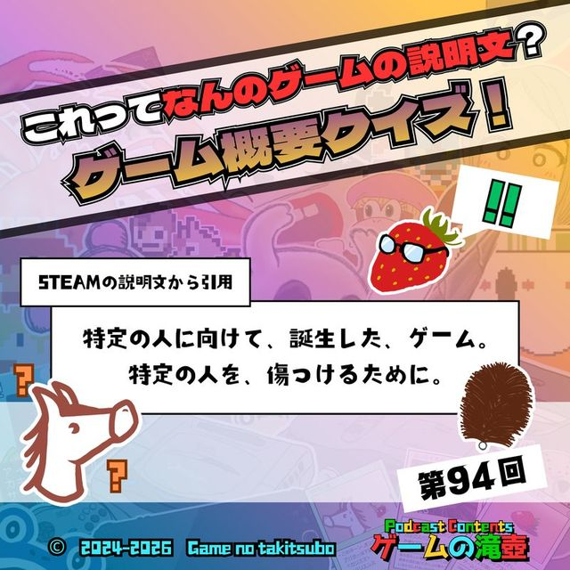

ホーム
エピソード
名物企画
ふさわしいゲーム診断
お知らせ
聴き方
おたより
公式X
ブログ
エピソード一覧へ

これってなんのゲームの説明文？ ゲーム概要クイズ！
#94 ・ 2026.02.25 配信
この回をこのページで再生
(Spotifyプレイヤーを読み込みます)
Spotify
Apple Podcasts
Amazon Music
LISTEN
YouTube
おまかせください。 ゲームの概要からゲームタイトルを当てまくります！！
📮 この回の感想をおたよりで送る
Xで感想をポスト
GAMES & KEYWORDS
登場ゲームタイトル・キーワード
ドンキーコング バナンザ
ElecHead
スーパーマリオRPG
ザンキゼロ
デジモンワールド
Getting Over It with Bennett Foddy
ヨッシーのたまご
ヨッシーのクッキー
ケツバトラー
Portal 2
脳を鍛える大人のDSトレーニング
ウーマンコミュニケーション
原神
Rogue Legacy
ファイナルファンタジーVI
ドラゴンクエストシリーズ
風来のシレンGB2 砂漠の魔城
アークザラッド2
ドラゴンクエスト5
風来のシレンシリーズ
あつまれ どうぶつの森
パックマンワールド
Baby Steps
ドラゴンクエストVII Reimagined
CHAPTERS
チャプター
00:00
オープニング
01:21
第1問
05:17
第2問
06:36
第3問
07:40
第4問
09:30
第5問
12:05
第6問
14:29
第7問
17:56
第8問
22:21
第9問
25:16
第10問
28:05
第11問
31:16
第12問
39:41
まとめ
41:43
わるい技目撃情報
51:11
おたより紹介
58:37
アートワーククイズ
1:09:51
エンディング
RELATED
関連する回
ガボの鼻が良すぎたドラゴンクエストVII Reimagined
#102
2026.04.22
100点満点のゲーム！！
#100
2026.04.08
記念回
ポケモン緑、サクラ大戦、海腹川背…今夜決定！ 国民の祝日にふさわしいゲーム！！
#98
2026.03.25
ふさわしいゲーム
← 前の回 #93
くさタイプ
次の回 #95 →
わるい状態 ～わるい村 ep05～ 同時上映 初代バイオハザード＆Tiling Forest
📮 この回の感想をおたよりで送る
Xで感想をポスト